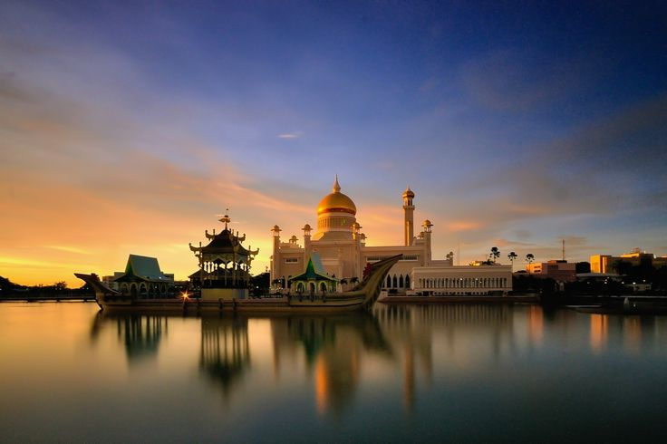
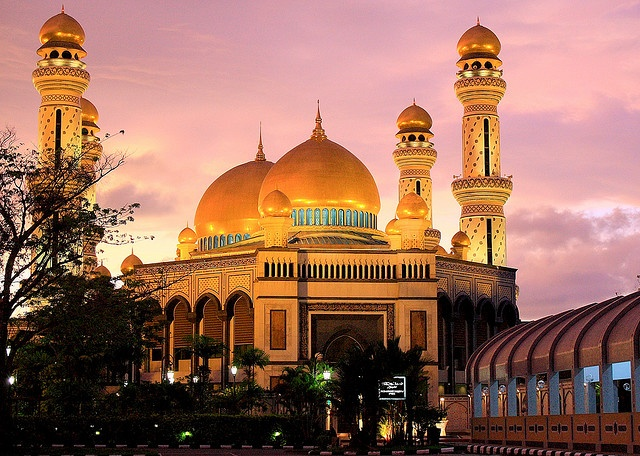
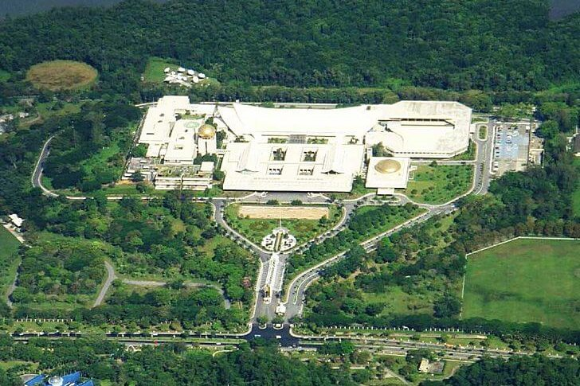
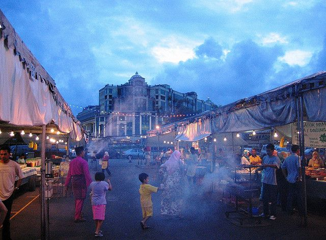
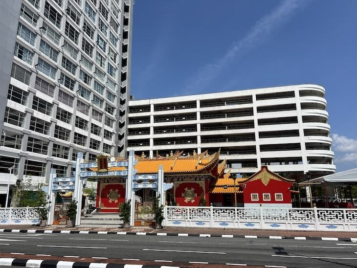
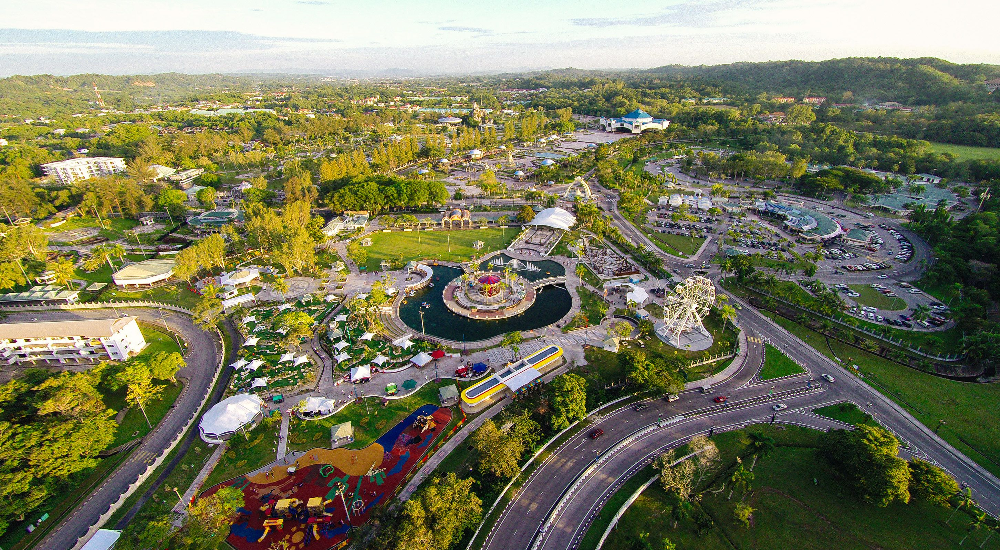
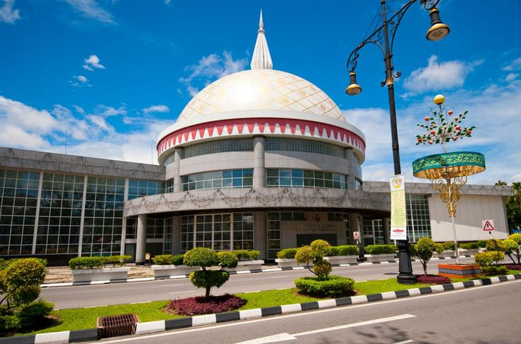

Omar Ali Saifuddien Mosque
A stunning mosque with a golden dome, set beside a lake in the capital, Bandar Seri Begawan.
Press Show on map on any card to see where the place is.

A stunning mosque with a golden dome, set beside a lake in the capital, Bandar Seri Begawan.

Brunei's largest mosque, with 29 golden domes and beautiful gardens. It looks amazing when lit up at night.

The official home of the Sultan and one of the largest palaces in the world. It opens to the public only during Hari Raya Aidilfitri. The rest of the year

A traditional water village built on stilts over the Brunei River. Take a water taxi to explore it.

Brunei's most popular evening food market. Try satay, grilled fish, nasi katok, kuih and fresh fruit juices at low prices. It opens from late afternoon into the night, so come hungry.

The oldest Chinese temple in Brunei, close to the riverside in the capital. See its colourful roof, dragons and lanterns. Please dress modestly and be quiet inside.

Pristine rainforest with rivers, waterfalls and canopy walkways. Reach it by boat from the Bangar jetty.

A large amusement park with rides and games, popular with families.

Learn about Brunei's history, royal regalia and natural heritage in the capital's museums.
Watch the rainforest in motion before you visit.